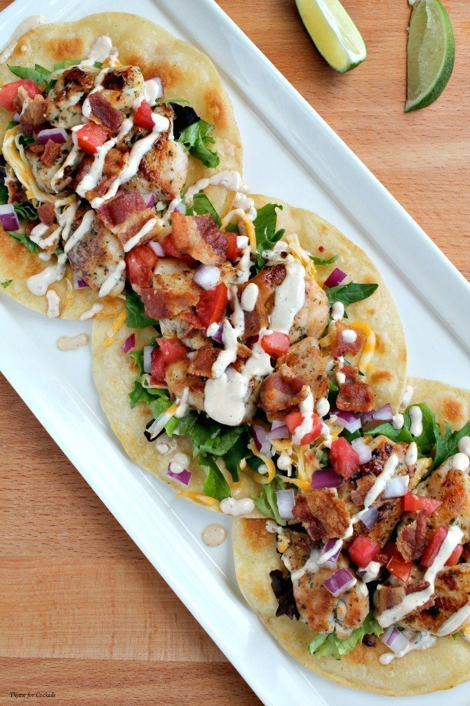

Ranch Chicken Tacos

A great change from regular Mexican style tacos.
A cool summer dinner, made quick with leftover rotisserie chicken.
Naturally you can use any type of chicken cooked the way you like;
just be sure to shred it for real tacos.
Prep time is 20 mins, cook time is 5 mins. Serves 4.
- 1/2 cup ranch dressing
- 1/4 cup reduced-fat sour cream
- 1 (1 ounce) packet taco seasoning mix, divided
- 1 tablespoon mild chunky salsa
- 2 cups shredded rotisserie chicken
- 8 (6 inch) corn tortillas
- shredded lettuce
- 1 tomato, chopped
- 4 green onions, sliced
- 1 (4 ounce) can sliced black olives
- 1 avocado- peeled, pitted, and diced (optional)
- 1 cup shredded Colby-Monterey Jack cheese
-
Combine ranch dressing, sour cream, 1 teaspoon taco seasoning,
and salsa in a small bowl. Cover and refrigerate until serving.
-
Toss chicken with remaining taco seasoning. Cover bowl loosely with
wax paper or plastic wrap. Microwave chicken until chicken is heated
through, about 2 to 3 minutes.
-
Warm the tortillas in a skillet for about a minute on each side to make
them pliable. Place a scoop of chicken on the tortilla and top with lettuce,
tomato, green onion, olives, avocado, cheese, and a spoonful of the ranch
dressing mixture.
Nutrition Facts
Per serving: 717 calories; protein 30.7g; carbohydrates 40.3g; fat 49g;
cholesterol 101.3mg; sodium 1419mg.